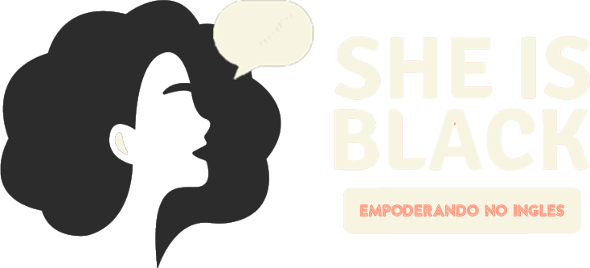
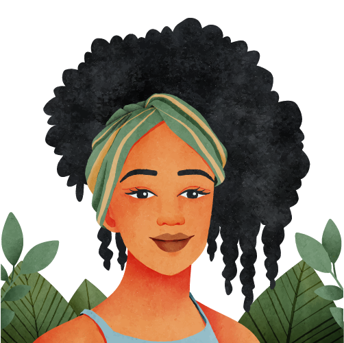
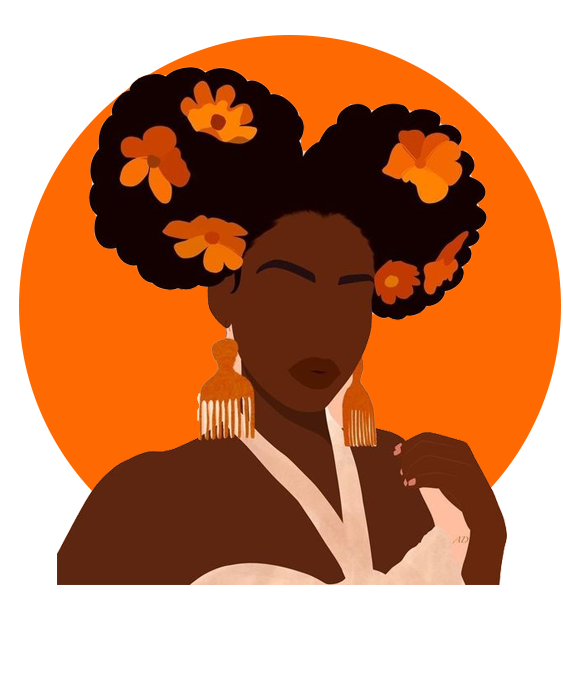
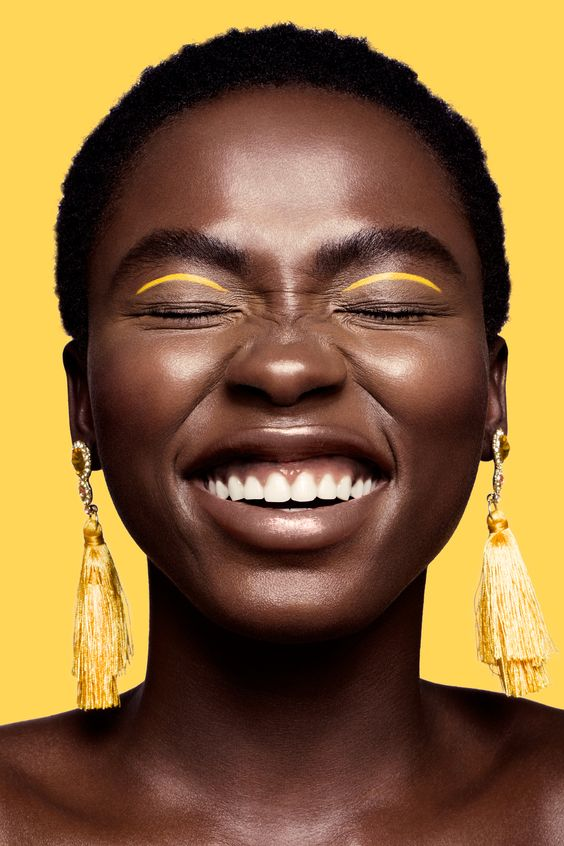
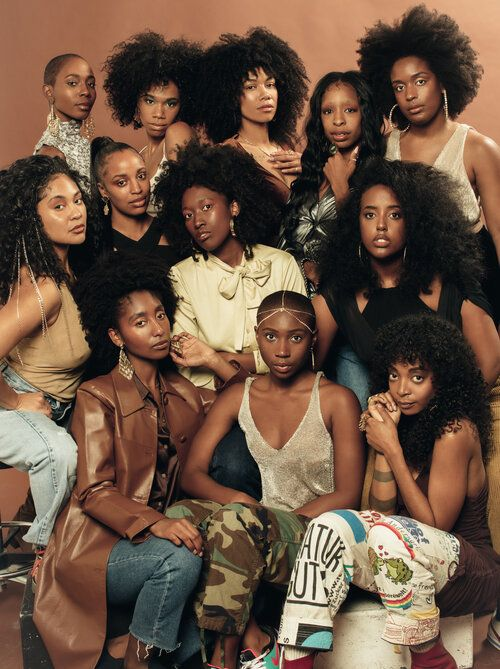

Do produto fiscal B2B em escala à pesquisa em campo. Cada case tem a profundidade que o problema pediu e deixa claro o que foi meu e o que foi do time.
Atuo com design visual desde 2014, com técnico em Computação Gráfica, graduação em Arquitetura e Urbanismo pela Unicamp e MBA em UX Design & Strategy pela PUCRS. Em 2020 migrei para produto digital e hoje sou Senior Product Designer na Smart Online, em tax tech e pagamentos.
Meu jeito de trabalhar: entender o contexto, fazer boas perguntas e decidir com evidência, junto com Produto e Engenharia. Acompanho o que foi entregue e cuido para que as soluções escalem com consistência.
Fora do Figma: viagens, trilhas, plantas e bichinhos.
smartonlineTax Tech · Pagamentos · Estratégia de produto
Reforma Tributária: desenhar para uma regra que ainda está sendo escrita
Como transformei uma mudança legal em regulamentação num painel para acompanhar créditos, débitos e pagamentos de IBS e CBS, e como levei esse conceito da descoberta com a liderança ao handoff.
Ruth Silva · Senior Product Designer
Valores e empresas nas telas são fictícios.
Meu papelSenior Product Designer responsável pela descoberta e pelo design
TimeCSO, CPO, tech lead, PM, especialista fiscal e times de Plataforma e Gestão de Documentos
Período[PREENCHER início] – em andamento
FormatoDescoberta, protótipos, eventos, validação com clientes, handoff
ProblemaA LC 214/2025 cria o IBS, a CBS e o split payment. Até 2033, as empresas vão conviver com tributos atuais (ICMS, DIFAL, FCP) e novos, com regras ainda em regulamentação. Os clientes precisariam acompanhar créditos, débitos e pagamentos num modelo que ninguém opera ainda.
O que eu fizConduzi a descoberta com a liderança (CSO, CPO) e com clientes, apresentei o conceito em dois eventos do setor, treinei as áreas comerciais e conduzo a validação e o refinamento do handoff com tech e PM, cenário a cenário. Propus dividir a entrega para não lançar uma visão frágil de documentos.
ResultadoProtótipo apresentado no Fórum E-Commerce Brasil e no Fórum de Gestão Fiscal e Tributária; piloto com 10 organizações clientes; plano de design até o handoff de 2026. [PREENCHER: impacto no roadmap, se houver]
Fase 1EntenderConduzi a descoberta do problema com o CSO e a pesquisa de conceitos e entendimento com clientes.
Fase 2ExplorarCriei rascunhos e versões para discussão com CPO, tech lead e PM.
Fase 3Proposta para eventosApresentei o protótipo em dois eventos, coletei insights e treinei comercial, tech sales e marketing.
Fase 4 · em andamentoDo evento ao produtoEm andamento: validação com clientes em protótipos interativos e refinamento do handoff com tech e PM.
01Contexto
Uma mudança legal que afeta todos os clientes
A Smart Online orquestra o pagamento de tributos para sellers, transportadoras e marketplaces. A Reforma Tributária muda a forma como essas empresas apuram e pagam tributos. Com o split payment, o imposto passa a ser separado no momento da liquidação. Além disso, o crédito de quem compra passa a depender de o fornecedor ter pago o próprio imposto. A empresa precisava se posicionar cedo, mesmo sem todas as regras publicadas.
Glossário rápido[CONFIRMAR definições]
CompetênciaPeríodo de apuração ao qual os tributos pertencem.
Fato geradorEvento que faz o tributo nascer e define sua competência.
ApropriarRegistrar o crédito a que a empresa tem direito.
ExtinguirQuitar um débito tributário.
Split paymentSeparação do imposto no momento da liquidação.
RADRecolhimento feito pelo adquirente (quem compra), no lugar do fornecedor.
02O problema
Como desenhar para regras que ainda não existem por completo?
Regulamentação em andamentoAtos do CGIBS ainda sendo publicados.
Dois sistemas convivendoTributos atuais e IBS/CBS lado a lado até 2033.
O pagamento muda de naturezaO mesmo documento pode ter tributos pagos por partes diferentes.
EscalaAlguns clientes recebem documentos de 9 a 12 mil fornecedores.
Usuário sem referênciaOs próprios clientes ainda não conhecem as novas regras.
Fase 1EntenderO que mudou nesta fase: o problema foi definido com a liderança e o modelo da Reforma foi estudado antes de qualquer tela.Meu papel: Conduzi a descoberta do problema com o CSO e a pesquisa de conceitos e entendimento com clientes.
1.1Descoberta
Descoberta com a liderança e com clientes
Conduzi reuniões de descoberta do problema com o CSO e uma pesquisa de conceitos e entendimento com clientes.
4participantes no estudo qualitativo sobre a tela atual de Gerenciamento de Tributos
21respostas no questionário da plataforma sobre conhecimento da Reforma
Principais achados
[PREENCHER 2 a 3 achados reais]
1.2Modelo
Entender o modelo antes de desenhar
[CONFIRMAR que eu conduzi as simulações]
Usei o ambiente piloto do Comitê Gestor para simular cenários: um fornecedor que vende R$ 300, outro que vende R$ 500, um contribuinte que compra R$ 500, o split entre fornecedores e o recolhimento feito pelo adquirente. Depois comparei com o demonstrativo de apuração.
Ambiente piloto do Comitê Gestor do IBS (CGIBS). Referência de estudo, não é design meu.
Insight“A mesma operação aparece de forma diferente para quem vende e para quem compra: é débito para um e crédito para o outro, e pode ser paga por um terceiro. A interface precisava mostrar os dois lados.”
Fase 2ExplorarO que mudou nesta fase: perguntas de produto substituíram suposições. O produto ainda era organizado por documento a pagar.Meu papel: Criei rascunhos e versões para discussão com CPO, tech lead e PM.
2.1Exploração
Perguntas antes de telas
Criei rascunhos e versões para discussão com CPO, tech lead e PM.
Workshop no quadro branco e primeiros rascunhos.
Home e Painel de pagamento de tributos.
Tributos de entrada.
Tributos de saída.
Faz sentido separar documentos de entrada e de saída?
Quantos fornecedores nossos clientes têm, e quantas notas de cada? Precisamos de uma visão por fornecedor?
É possível pagar o RAD em lote?
Quantos passos até chegar ao pagamento?
O que é informação de gestão e o que é operação?
Nesta fase, o produto ainda era organizado por documento a pagar, com um botão de pagar em cada linha.
Fase 3Proposta para eventosO que mudou nesta fase: a experiência passou de “documentos a pagar” para “competência a fechar”.Meu papel: Apresentei o protótipo em dois eventos, coletei insights e treinei comercial, tech sales e marketing.
3.1Proposta
De “documentos a pagar” para “competência a fechar”
Na proposta apresentada nos eventos, reorganizei a experiência em torno da competência, ou seja, do que precisa acontecer para fechar a apuração do período. Isso reflete o fechamento de apuração da Reforma e permite agrupar fornecedores e seus documentos para dar ao cliente uma visão da operação, e não uma fila de guias. O pagamento passou a ser um meio, acompanhado na Tax Wallet.
Painel tributário, entrada e saída
1Status da competência
2Créditos apropriados x a apropriar
3Débitos extintos x em aberto
4Pendências para fechar a competência
5Distribuição da apropriação: pago via RAD x apropriado do fornecedor
6Fornecedores e clientes por classe
Créditos a apropriar
1Visão por fornecedor ou por documento
2Seleção em lote
3Resumo antes de pagar
4Envio para a Tax Wallet
Tax Wallet
1Status de cada operação
2Detalhes com linha do tempo
3Acesso à guia
Fornecedores
1Classe e categoria de cada fornecedor
2[CONFIRMAR o significado de “Monitorado” e “Patrocinado”]
Levar o conceito para dentro e para fora da empresa
Para o mercadoPreparei e conduzi a apresentação do protótipo no Fórum E-Commerce Brasil e no Fórum de Gestão Fiscal e Tributária, coletando ideias e insights do público.Insight que mudou o design: [PREENCHER; se não houver, remover esta linha]
Para a empresaTreinei os times comercial, tech sales e marketing nos conceitos da Reforma, para que falassem com clientes com a mesma base.[PREENCHER se houver: nº de sessões ou pessoas, material criado]
Fase 4Do evento ao produtoO que mudou nesta fase: o conceito virou plano de entrega, com impacto antecipado na plataforma e decisões cenário a cenário. Em andamento.Meu papel: Validação com clientes em protótipos interativos e refinamento do handoff cenário a cenário, com tech e PM.
4.1Plataforma
A Reforma não é um módulo: é uma mudança na plataforma inteira
A Reforma muda a forma como a plataforma inteira lida com documentos, tributos e pagamentos. Além de desenhar o módulo, antecipo o impacto dessa mudança nas outras áreas da plataforma e articulo as discussões com os times responsáveis, principalmente Plataforma e Gestão de Documentos, antes que a necessidade vire bloqueio no desenvolvimento.
Exemplo concreto · Cadastro/OnboardingStatus: [PREENCHER — ex.: em discussão / priorizado para a entrega X]
HojeA Smart paga só tributos de documentos de saída (DIFAL, FCP).
→ Com a ReformaSurge a possibilidade de pagar também tributos de documentos de entrada, o que amplia o que a plataforma entrega ao cliente.
→ O que antecipeiPara capturar documentos de entrada, o cliente precisa enviar o certificado [CONFIRMAR o nome exato], algo que o fluxo de cadastro atual nunca pediu. Levei essa necessidade a [CONFIRMAR: time de Plataforma / PM / tech lead] e sinalizei que a jornada de cadastro precisa incluir e melhorar essa etapa.
Uma tela nova no módulo da Reforma depende de uma mudança no cadastro, que fica fora dele.
4.2Estrutura
Em um domínio em que a regra ainda está sendo escrita, cada frente de investigação começa separando o que já sabemos do que precisamos descobrir.
O que qualquer solução precisa respeitar
O “Ver mais detalhes” do Painel leva a Créditos a apropriar (entrada) e Débitos a pagar (saída), e cada tela abre por contraparte e por documento.
Débito é da organização quando o CNPJ emitente é dela ou de uma empresa cadastrada; crédito, quando o CNPJ destinatário é.
O débito entra na competência pelo fato gerador. Um documento com tributos em competências diferentes aparece em cada uma, só com os tributos dela.
O documento tem débito em aberto enquanto algum tributo dele naquela competência não foi quitado.
O vencimento é da competência, não do documento.
Débito atrasado gera juros e multa. Crédito “atrasado” não: o direito vale cinco anos, e quem se atrasou foi o fornecedor.
A classe do fornecedor mede relevância (curva acumulada de compra), não confiança, e é calculada sobre a carteira de cada organização.
O fornecedor só existe porque um documento de entrada o trouxe; não há cadastro manual.
O que a investigação precisa responder
Como o operador percorre o detalhe: por tributo, por documento ou por contraparte?
A leitura por cliente tem função quando não se paga por cliente? Se tiver, é para cobrar ajuste?
Como ele encontra o que já foi quitado, que não fica nesta leitura?
Onde crédito e débito se encontram na tela, se a obrigação é o balanço entre os dois?
Aposta atual: agrupar fornecedores por classe de relevância, porque é o corte que permite agir em bloco sobre uma base grande.
4.3Estados
A listagem de documentos e o detalhamento por fornecedor dependem um do outro. Um documento pode ter N tributos, cada um com status e ciclo de processamento próprios, e o documento também tem estados que mudam o que acontece com esses tributos. Por isso, o status do documento não pode ser tratado isoladamente do status dos seus tributos.
{{ ln.label }}
{{ st.t }}
↓ estados do documento afetam os tributos
Cancelamento antes da coleta sem processamento, sem efeito financeiro
Cancelamento depois de apropriado ou pago pode exigir estorno
Modelo de estados em definição. O mesmo evento, o cancelamento, tem consequências opostas dependendo de quando acontece.
DocumentoCancelado antes da coleta
TributosSem processamento
ConsequênciaSem efeito financeiro
Ação do operador[DEFINIR]
DocumentoCancelado após apropriação ou pagamento
TributosJá processado
ConsequênciaPode exigir estorno
Ação do operador[DEFINIR]
DocumentoAtivo
TributosUm tributo pago e outro pendente
ConsequênciaDébito em aberto na competência
Ação do operadorPagar o tributo pendente
[PREENCHER outros cenários mapeados]
O que o modelo precisa garantir
A listagem e o detalhe nunca se contradizem.
O operador identifica, na listagem, que um documento precisa de tratamento, sem abrir um por um.
Cada combinação de estados tem uma ação clara, ou uma explicação de por que nenhuma ação é necessária.
Decisões em aberto · Design (propostas minhas)
Regra de precedência do status resumido na listagem.
Como documentos com tributos em estados diferentes entram nos contadores e filtros.
Decisões em aberto · Regra (validação com a especialista fiscal)
Em qual competência entra o estorno de um documento cancelado depois de uma competência encerrada.
O que acontece com o crédito quando o fornecedor cancela o documento.
4.4Pesquisa
Pesquisar um tema que o próprio usuário ainda não domina
ProblemaMesmo com convites, o engajamento nas entrevistas foi baixo e as respostas eram pouco conclusivas: os clientes ainda não conhecem as novas regras. Perguntar “o que você precisa?” sobre uma lei que a pessoa não entende não gerava evidência útil.
01Protótipos interativos para teste assíncronoCriei protótipos navegáveis com Figma Make e Claude para que os clientes testassem no próprio tempo, com feedback registrado e comportamento acompanhado no Hotjar. [CONFIRMAR onde o protótipo é publicado para rodar o Hotjar]
02Recrutar quem tem motivo para falarA tela da Reforma evolui o Gerenciamento de Tributos, projeto em que já trabalhei. Por isso, passei a agendar conversas com clientes que deram nota baixa no NPS e pediram para dar feedback.
03Regra na fonte, não na opiniãoA pergunta “como a lei funciona” deixou de ir para o usuário: fui buscar a resposta nos canais do governo e com a especialista fiscal. Com os clientes, a pesquisa foca no trabalho deles e em se a solução é compreensível.
04Entregas menores, com valor desde a primeiraEm vez de um lançamento único, optamos por entregas mais curtas, cada uma com valor para o usuário. Primeira entrega: [PREENCHER]
Cuidados metodológicosClientes com NPS baixo tendem a trazer uma visão mais crítica; por isso, [PREENCHER como equilibro].Com quem ainda não domina a regra, um teste “sem dificuldades” pode esconder má compreensão; por isso, [PREENCHER].
O que aprendemos até agora
[PREENCHER 1 a 2 achados reais — se ainda não houver: “Coleta em andamento”]
4.5Library
Nova library de design, no meio da entrega
Com a chegada da nova liderança de design, o time passou a adotar uma library padrão. Migrei e adaptei os componentes do módulo enquanto desenhava as novas telas.
[CONFIRMAR se propus componentes novos para a library e quais]
Trade-offMenos velocidade no curto prazo, em troca de consistência com o restante da plataforma.
4.6Plano
Depois do evento, o trabalho virou um plano de sprints de design de duas semanas, organizado por oportunidade, ou seja, por problema do usuário. Cada oportunidade passa só pelas etapas de que precisa, e o plano mostra, antes de começar, o que cabe até o handoff.
[CONFIRMAR meu papel na estrutura das oportunidades, no método e no plano de capacidade; a pontuação foi feita por outra pessoa do time]
18oportunidades
6sprints de design (set a dez 2026)
30pontos de teto por sprint
139 de 162pontos cabem até o handoff de 2026
Fechamento da competênciaTributo pago duas vezesTributo pago por foraInstabilidade da SEFAZEmite a guia e não pagaProvar o pagamentoDois regimes nas mesmas telasCliente sem caixa deixa o tributo vencer
01Falar com stakeholder
02Benchmark
03Jornadas, fluxos e árvore de oportunidades
04Ideação colaborativa
05Teste de conceito
06UI no design system
07Teste de usabilidade
Nem toda oportunidade passa por todas as etapas: o problema define o caminho.Pontos planejados por sprintTeto de 30 pontos por sprint. Handoff de 2026 entre a Sprint 5 e a Sprint 6.
Handoff 2026
{{ b.s }}
{{ b.v }}
[CONFIRMAR A ou B] Nota sobre validação. A: “A pesquisa assíncrona com protótipos e Hotjar corre em paralelo, fora da pontuação das sprints.” B: “O plano concentrou a validação no fim. Ajustamos para [PREENCHER].”
4.7Handoff
Cada ponto em aberto vira uma decisão
No refinamento do handoff, cenário a cenário, cada ponto em aberto segue o mesmo caminho: levanto o problema, reúno tech e PM, discutimos as alternativas e saímos com uma proposta definida. Foi assim que surgiu a divisão da entrega entre contraparte e documento.
01 →Ponto identificado
02 →Problema levantado com tech e PM
03 →Alternativas
04 ✓Proposta definida
[CONFIRMAR se existe registro dessas decisões. Se existir: “Cada decisão fica registrada em [PREENCHER]” + print borrado]
DDecisões de design
O que decidimos, por quê e do que abrimos mão
1
Separar a entrega para não lançar um modelo frágil
ContextoO “Ver mais detalhes” do Painel leva a Créditos a apropriar e Débitos a pagar, e cada tela abre por contraparte e por documento.
O que eu viA relação entre documento e tributos tem cenários demais para mapear de uma vez. Um tributo do documento pode estar pago e outro não; o documento pode ser cancelado depois de já ter sido pago; um documento pode ter tributos em competências diferentes. Lançar a visão por documento sem esses cenários significaria mostrar estados errados justamente numa informação financeira.
O que propusConduzi uma reunião de alinhamento sobre a aba de documentos e propus entregar primeiro a visão por contraparte, nas duas telas, e a visão por documento em seguida. O tech lead avaliou a complexidade técnica e confirmou a decisão. O design das quatro visões continua acontecendo junto, para a primeira entrega não criar um modelo que a segunda precise desfazer.
Trade-offO cliente começa com uma leitura mais agregada; quem precisa investigar documento a documento espera a segunda entrega.
Resultado[PREENCHER]
{{ d.n }}{{ d.title }}
{{ r.k }}{{ r.v }}{{ r.pending }}
Evolução da classe de fornecedor: antes → depois
Antes · proposta de evento
Classes com cores de alerta (C em vermelho) e botão “Adicionar fornecedor”.
Depois da descoberta
[CONFIRMAR — ex.: escala de cor neutra, porque classe não é risco; remoção do cadastro manual, porque o fornecedor nasce do documento]
{{ d.n }}{{ d.title }}
{{ r.k }}{{ r.v }}{{ r.pending }}
PMeu papel
O que conduzi e o que fiz em conjunto
ConduziDescoberta do problema com o CSOPesquisa de conceitos e entendimento com clientesRascunhos e versões para discussão com CPO, tech lead e PMPreparação e apresentação do protótipo nos dois eventos, com coleta de insightsTreinamento dos times comercial, tech sales e marketingProtótipos interativos para validação assíncrona (Figma Make, Claude, Hotjar)Recrutamento e conversas com clientesReunião de alinhamento e proposta de dividir a entrega (contraparte antes de documento)Refinamento do handoff cenário a cenário, reunindo tech e PM a cada ponto em abertoAntecipação do impacto da Reforma na plataforma e articulação com os times de Plataforma e Gestão de DocumentosMigração e adaptação dos componentes do módulo para a library padrãoTextos da interface, fluxos e cenários
Em conjuntoDecisões de escopo e regras com tech lead e PMRegras fiscais com a especialista fiscal (pesquisa em canais do governo)Modelagem dos estados documento x tributo [CONFIRMAR]Plano das sprints de design [CONFIRMAR autoria][CONFIRMAR] Simulações no piloto do CGIBS
RResultados
Onde o trabalho está hoje
2 eventosFórum E-Commerce Brasil e Fórum de Gestão Fiscal e Tributária
10 organizaçõesclientes no piloto fechado, com testes moderados do protótipoStatus: [PREENCHER]
3 áreas treinadascomercial, tech sales e marketing
139 de 162pontos planejados até o handoff de 2026
[PREENCHER: impacto no roadmap, se houver] · Se o piloto ainda não tiver resultado: “Piloto em andamento. Próximos passos: [PREENCHER].”
AAprendizados
O que levo deste projeto
Protótipo como ferramenta de estratégiaTornar concreto um futuro incerto colocou liderança, Produto, áreas comerciais e clientes na mesma conversa.
Entender a regra antes da telaA mesma operação tem dois lados, e a interface precisa mostrar os dois.[CONFIRMAR]
Mudar a pergunta da pesquisaQuando o usuário não domina o tema, em vez de “o que você precisa?”, pergunto “você entende o que está vendo e consegue agir?”.[CONFIRMAR]
A tela é a ponta de uma cadeia de dadosEm produto regulatório, antecipar o impacto na plataforma evita que a regra certa quebre na integração.[CONFIRMAR]
O que faria diferente
[PREENCHER]
{{ c.t.brandName }}{{ c.domain }}
{{ c.title }}
{{ c.summary }}
Ruth Silva · {{ c.role }}
{{ m.k }}{{ m.v }}
{{ t.k }}{{ t.v }}
{{ s.n }}{{ s.label }}
{{ s.title }}
{{ s.body }}
{{ b }}
{{ fg.cap }}
{{ c.nRole }}Meu papel
{{ c.role }}
{{ col.label }}{{ it }}
{{ s.n }}{{ s.label }}
{{ s.title }}
{{ s.body }}
{{ b }}
{{ fg.cap }}
{{ c.nDec }}Decisões
O que decidimos, por quê e do que abrimos mão
{{ d.n }}{{ d.title }}
Por quê{{ d.why }}
Trade-off{{ d.tradeoff }}
{{ s.n }}{{ s.label }}
{{ s.title }}
{{ s.body }}
{{ b }}
{{ fg.cap }}
{{ c.nRes }}Resultado
O que mudou com o trabalho
{{ r.v }}{{ r.l }}
{{ c.nLearn }}Aprendizados
O que levo deste projeto
{{ c.learnings }}
O que faria diferente{{ c.diff }}
Obrigada pela atençãoRuth Silva
{{ c.lbEl }}
Case · UX para Minas Pretas · She Is Black
3ª Formação em UX Design — PretaOn
Da pesquisa à interface, uma experiência colaborativa de Product Design construída a partir de problemas reais.
PapelProduct Designer
ContextoUX para Minas Pretas · PretaOn
Ano2024
ÁreasPesquisa · UX/UI · Design System · Identidade visual
01Visão geral
ContextoFormação prática em UX Design da UX para Minas Pretas, com projeto em equipe.
Meu papelAtuação transversal: pesquisa, fluxos, todas as interfaces, identidade visual e Design System.
TimeGrupo 05 · Educação: Ana Paula Nascimento, Ethieny Karen, Larissa Braga e Ruth Silva.
A PretaOn é a formação gratuita da UX para Minas Pretas, comunidade que forma e conecta mulheres negras em UX. Na 3ª turma, entre maio e junho de 2024, sete equipes aplicaram Design Centrado no Usuário a um problema real da vida de pessoas negras. O desafio do meu grupo: uma plataforma educativa que centralize saberes para mulheres negras.
12aulas ao vivo
7equipes e temas
~60respondentes na pesquisa do grupo
6fluxos de usuária
03O problema
Inglês como barreira de entrada
Contexto→O racismo está presente na educação há anos. Mulheres negras relatam pouca integração no ambiente escolar por falta de pessoas com trajetórias parecidas.
Problema→O baixo desempenho em inglês elimina a maior parte dos candidatos negros em processos seletivos: menos de 3% são fluentes.
Necessidade→Aprender inglês cabendo no orçamento e no tempo, com conteúdo que reflita a própria vivência.
Oportunidade✦Cursos e apps existentes são caros ou reforçam a cultura americana e europeia; nenhum une app, representatividade e comunidade.
04Pesquisa
Começando pelas pessoas
Minha parteContribuí com a pesquisa e com a interpretação dos achados que viraram requisitos da solução.
Abordagem
1Matriz CSD em grupo (Miro): certezas, suposições e dúvidas
·Desk research sobre inglês, renda e mercado de trabalho
2Análise de cursos presenciais, apps e projetos voltados à cultura negra
3Questionário quantitativo no Google Forms com ~60 mulheres negras, pardas e indígenas
Pergunta-chave“O que você gostaria de ver num app para aprender inglês?”A resposta de uma entrevistada resumiu a intenção da plataforma: conteúdo “pra gente”.
{{ s.v }}{{ s.l }}Fonte: {{ s.src }}
Quem respondeu
{{ p.k }}{{ p.v }}
Padrões nas respostas
●{{ a }}
05Definição do problema
De dados a uma direção de produto
Problema definido pelo grupoComo aumentar as chances de inclusão e crescimento de mulheres negras no mercado de trabalho por meio do aprendizado da língua inglesa?
O que descobrimosO que isso significavaO que decidimos construir
{{ fr.a }}
{{ fr.b }}
{{ fr.c }}
06Fluxos de usuária
Antes da interface, a jornada
Minha parteDesenhei os fluxos a partir das seis jornadas definidas com o grupo.
EntradaSplash e boas-vindas
→
CadastroDados + autodeclaração
→
DecisãoFazer teste de nível?
→
HomeHub com 4 menus
Sim → questionário de nível → Home·Não → Home direto, sem bloquear o início·Não se autodeclara → fim do cadastro
{{ fl.n }}{{ fl.t }}{{ fl.d }}
Os fluxos partiram de um wireframe feito em grupo no Figma na primeira aula e revisado na segunda. Os arquivos desses wireframes não estão aqui; a página mostra a versão final.
07Identidade visual
Construindo a linguagem visual
Minha parteCriei a identidade visual do She Is Black: marca, cores, tipografia e o uso de ilustração e fotografia.
Marca

Perfil de mulher negra com um balão de fala: o inglês como voz. Lema “Empoderando no inglês”.
Cores
{{ c.n }}{{ c.hex }}
Laranja quente e marrons da pele negra como base; amarelos de apoio para gamificação e destaques.
InterfaceAaMontserrat · 10 a 24px · Regular a Black
MarcaAaAbhaya Libre ExtraBold · títulos de destaque

Ilustração

Ilustração

FotografiaFotografia

Fotografia
Mulheres negras em todas as imagens e referências culturais negras no conteúdo: a identidade responde ao padrão mais forte da pesquisa, a falta de representatividade nos cursos existentes.
08Design System
De telas isoladas a um sistema
Minha parteDefini o Design System que sustenta as telas: tokens de cor e tipografia e componentes reutilizados em todo o app.
Escala tipográfica · Montserrat
{{ ts.sample }}{{ ts.meta }}
Componentes
Badge · 3 tamanhos, 8 variações de ícone, 13 cores
Avatar · 6 tamanhos, estados default, hover e focus
Video player · 5 tamanhos, estados tocando e pausado
{{ r.t }}{{ r.d }}
09Design de interface
Transformando decisões em interface
Minha parteDesenhei todas as interfaces do protótipo.
SplashMarca aplicada em tela cheia sobre o laranja da identidade: primeiro contato já comunica para quem é o app.IdentidadeConsistência
Boas-vindasFotografia de mulher negra em destaque e uma frase direta sobre o público: representatividade como proposta de valor.ConteúdoHierarquia
AutodeclaraçãoEtapa do cadastro que garante o espaço seguro pedido na pesquisa, com opções claras e sem ambiguidade.FluxoConteúdo
Teste de nívelOpcional, para não bloquear quem quer começar logo: o ponto de decisão do fluxo de cadastro.FluxoInteração
HomeMenus de listening, exercícios, aulas ao vivo e suporte, com referências culturais negras no conteúdo em destaque.NavegaçãoLayout
AtividadesExercícios gamificados, pensados para quem tem pouco tempo e quer estudar em sessões curtas.InteraçãoComponentes
DúvidasSuporte por chatbot, respondendo à necessidade de tirar dúvidas citada na pesquisa.ConteúdoInteração
Aula ao vivoAulas com professoras, usando o mesmo player e cartões do sistema para manter a consistência.ComponentesConsistência
ConversaçãoCenas de filmes e séries como material, ligando o inglês ao que as usuárias já consomem.ConteúdoLayout
01 · ExploraçãoWireframe feito em grupo no Figma, em tempo real, na primeira aula.
02 · RefinamentoEvolução do wireframe na segunda aula, com as jornadas já definidas.
03 · ResultadoProtótipo final em alta fidelidade, com identidade visual e Design System aplicados.
As decisões do She Is Black saíram de discussões em grupo, em aula e pelo WhatsApp, das quais participei ativamente. A ideação incluiu sugestões livres de nomes e conceitos antes da escolha final. Os registros das críticas não foram preservados; o que ficou documentado são as decisões que resultaram delas.
01Explorar
02Questionar
03Argumentar
04Testar
05Refinar
Decisão do grupo{{ g.t }}{{ g.d }}
11Minha contribuição
Autoria dentro de um projeto coletivo
{{ c.k }}{{ c.level }}
{{ c.v }}
12Resultado
Da descoberta à solução
{{ ch.n }}{{ ch.arrow }}{{ ch.t }}{{ ch.d }}
Não houve métricas de uso nem testes de usabilidade: por ser um projeto fictício, o ciclo terminou no protótipo, apresentado em um pitch de 7 minutos à turma. Testes e iterações seriam o próximo passo em um produto real. Os entregáveis foram a pesquisa, os seis fluxos, a identidade visual, o Design System e o protótipo navegável.
13Aprendizados
O que levei dessa experiência para minha prática
{{ l.t }}{{ l.d }}Evidência · {{ l.e }}
Uma experiência de formação que transformou conhecimento em prática.
Ficha técnica · EquipeAna Paula Nascimento, Ethieny Karen, Larissa Braga e Ruth Silva · Turma 3
FerramentasFigma · Miro · Trello · Google Forms · PowerPoint · Canva · Microsoft Designer
RCHLORIACHUELOUI/UX Case · Varejo omnichannel · Mobile
Romaneio digital Riachuelo
Como tirei do papel o embarque de pedidos nas lojas: coleta, conferência e assinatura do transportador em um único fluxo no coletor Honeywell.
Ruth Silva · Assistente de Criação
{{ m.k }}{{ m.v }}
{{ t.k }}{{ t.v }}
01Contexto e problema
Um embarque manual no meio de uma operação omnichannel
No varejo omnichannel, as lojas também funcionam como centros de expedição. O embarque de pedidos dependia de conferência manual e papel, com pouca rastreabilidade. A Riachuelo queria integrar o Portal do Transportador ao coletor “Mobile Honeywell” já usado nas lojas e implementar um romaneio digital para controlar pedidos e entregas.
ObjetivoOtimizar o processo de embarque de pedidos nas lojas Riachuelo.
MetasEficiência no embarque, precisão, rastreabilidade e satisfação do cliente, garantindo que nenhum pedido seja entregue com erro causado pela etapa de romaneio.
02Desafios de negócio
Cinco frentes que precisavam funcionar juntas
→{{ c.t }}{{ c.d }}
03Usuários e proto persona
Quem opera o romaneio está em pé, com pressa e com o coletor na mão
Os funcionários das lojas são os principais usuários: coletam pedidos, geram romaneios, colhem a assinatura do transportador e acompanham o status das entregas.
Carla Dias
Funcionária Riachuelo · 3 anos de loja
{{ p }}
Dia a dia
{{ d.n }}{{ d.t }}
Pontos de dor
{{ p }}
04Meu papel
Interface e fluxos do app, dentro do time da Online Applications
Participei do projeto como Assistente de Criação na Online Applications, desenhando a interface do app com o time de produto e desenvolvimento e com os stakeholders da Riachuelo.
{{ r }}
05Processo
Quatro etapas, cada uma com uma pergunta a responder
Etapa {{ p.n }}{{ p.t }}{{ p.q }}{{ p.d }}
06Fluxos de tarefas
Dois pontos de partida para a mesma coleta
Mapeei a coleta com o romaneio digital no coletor Honeywell. O insight principal: a coleta pode começar pelo transportador que chega à loja ou pelo manifesto de carga já emitido. O app precisava suportar os dois sem virar dois produtos.
{{ rc.sc.desc }}
{{ s.n }}{{ s.who }}{{ s.t }}
Loja / colaboradorTransportadorSistema
07Decisões de design
O que decidimos, por quê e do que abrimos mão
{{ d.n }}{{ d.title }}
Por quê{{ d.why }}
Trade-off{{ d.tradeoff }}
08Solução
Cinco recursos que cobrem a coleta de ponta a ponta
{{ m.n }}{{ m.t }}
09Telas principais
Onde as decisões aparecem na interface
{{ a.title }}
{{ a.why }}
{{ nt.n }}{{ nt.k }} · {{ nt.v }}
10Jornada completa
15 telas organizadas pelas etapas da coleta
{{ rc.stage.desc }}
{{ s.label }}{{ s.cap }}
11Validação e resultado
Um protótipo validado com o time, pronto para desenvolvimento
O protótipo navegável foi validado com o time e com os stakeholders antes do handoff. A solução tornou o embarque mais eficiente, rastreável e seguro para os colaboradores de loja, com maior controle logístico e menos erros na entrega.
{{ r.v }}{{ r.l }}
12Aprendizados
Desenhar para a operação é desenhar para o contexto
{{ l.t }}{{ l.d }}
Obrigada pela atençãoRuth Silva
{{ rc.lbEl }}
Ecori OnlineUI/UX Case · B2B · Energia solar
Reestruturação da plataforma Ecori
Como transformei uma jornada de orçamentação solar confusa, com regras frágeis, em um fluxo claro, confiável e pronto para escalar.
Ruth Silva · UI & Brand Designer
{{ m.k }}{{ m.v }}
{{ t.k }}{{ t.v }}
01Contexto e problema
Uma plataforma funcional, mas que não acompanhava o negócio
A Ecori é distribuidora nacional de soluções fotovoltaicas. A plataforma original havia sido construída sobre regras de negócio complexas, fluxos pouco intuitivos e uma estrutura técnica descentralizada. Com o crescimento, isso passou a comprometer a eficiência operacional e a confiança de quem montava orçamentos.
Principais problemas encontrados
{{ p.n }}{{ p.t }}
02Desafio de negócio
Mais volume, mais regras e a mesma estrutura
A plataforma, que antes atendia demandas pontuais, passou a sustentar um volume maior de cadastros, pedidos e regras de orçamentação. O custo aparecia em retrabalho, pedidos inconsistentes e dependência do time de desenvolvimento para qualquer ajuste.
→{{ c }}
03Usuários do produto
Quatro perfis, quatro níveis de conhecimento técnico
{{ u.name }}
{{ u.desc }}
Precisa de{{ u.need }}
A reformulação considerou esses perfis para adaptar a experiência às jornadas, níveis de conhecimento técnico e objetivos de uso de cada um.
04Meu papel
Liderei o redesenho de ponta a ponta, entre cliente e engenharia
Fui a designer responsável pelo projeto dentro da fábrica de software. Além da interface, atuei na tradução das regras de negócio e no alinhamento direto entre o cliente e o time de engenharia.
{{ r }}
05Descoberta
Mapear o fluxo real antes de redesenhar
Transcrevi as regras do sistema antigo e mapeei os processos de acesso, home, orçamento e pedido. O mapa tornou visíveis os pontos de decisão, validações e integrações (Protheus e SMTP) e virou a base comum de conversa com cliente e engenharia.
Fluxo de uso: acesso à plataforma e home (Miro)
Insight {{ i.n }}{{ i.t }}{{ i.d }}
06Estratégia
Três frentes atacadas em paralelo
{{ fr.n }}{{ fr.title }}
{{ fr.desc }}
07Decisões de design
O que decidimos, por quê e do que abrimos mão
{{ d.n }}{{ d.title }}
Por quê{{ d.why }}
Trade-off{{ d.tradeoff }}
08Solução
Cinco módulos, uma jornada contínua
{{ m.n }}{{ m.t }}
09Telas principais
Onde as decisões aparecem na interface
{{ a.title }}
{{ a.why }}
{{ nt.n }}{{ nt.k }} · {{ nt.v }}
10Validação e resultados
Uma base mais fluida, segura e escalável
A nova plataforma reduziu erros operacionais na criação de orçamentos e pedidos e diminuiu o tempo de finalização de cada processo. A clareza das regras aumentou a satisfação de usuários internos e externos e trouxe ganho de produtividade às equipes técnicas, com uma base preparada para novas integrações.